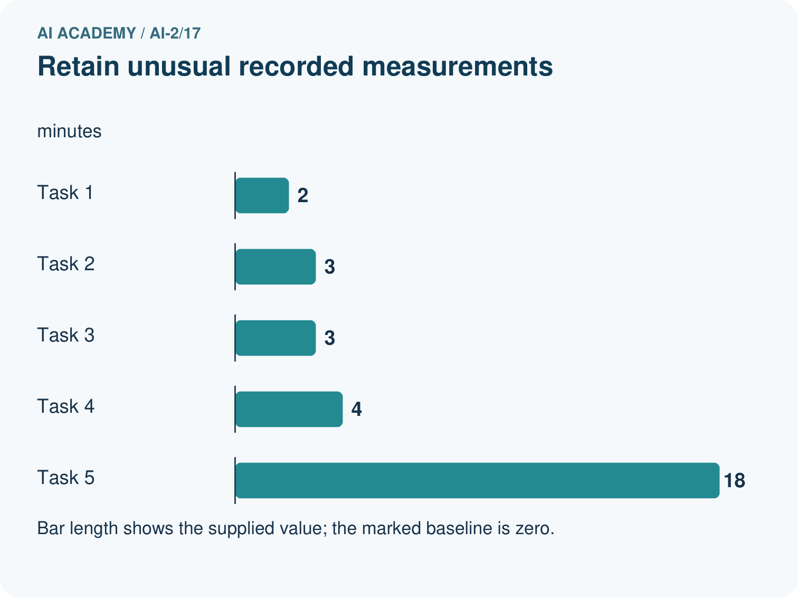
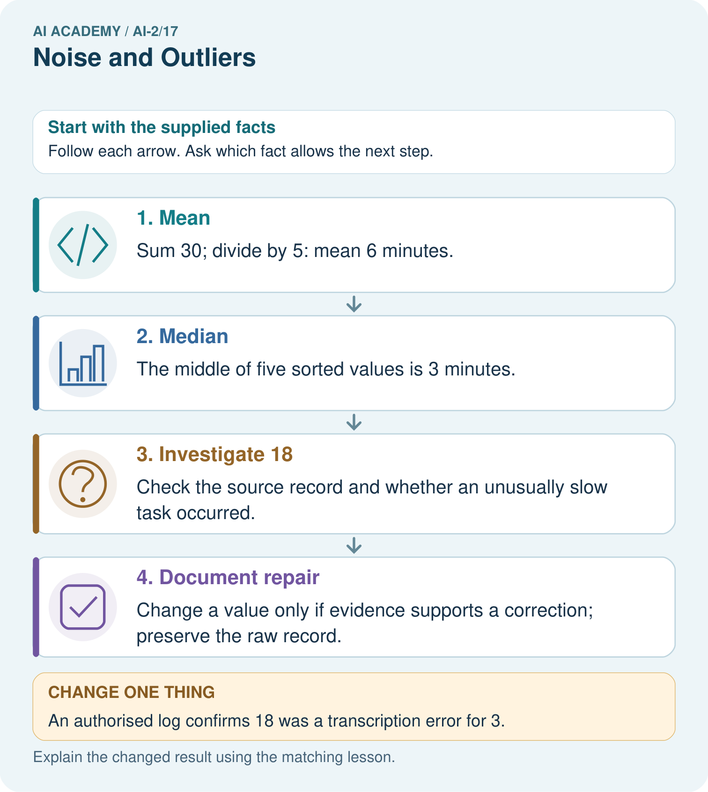
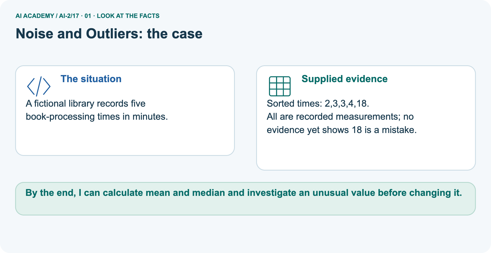
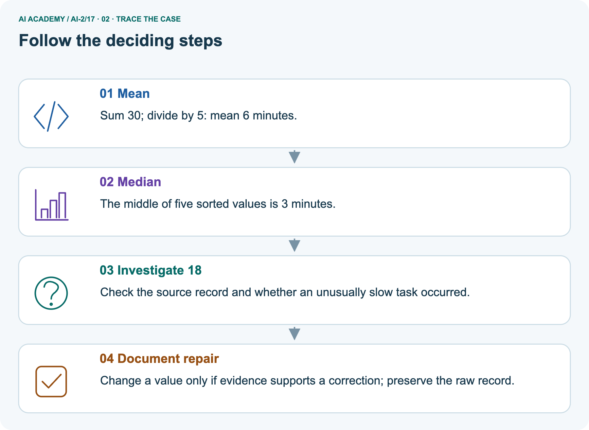
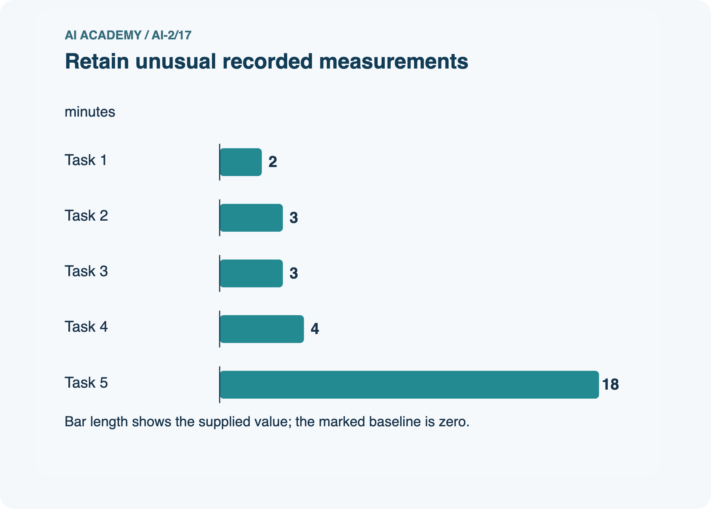
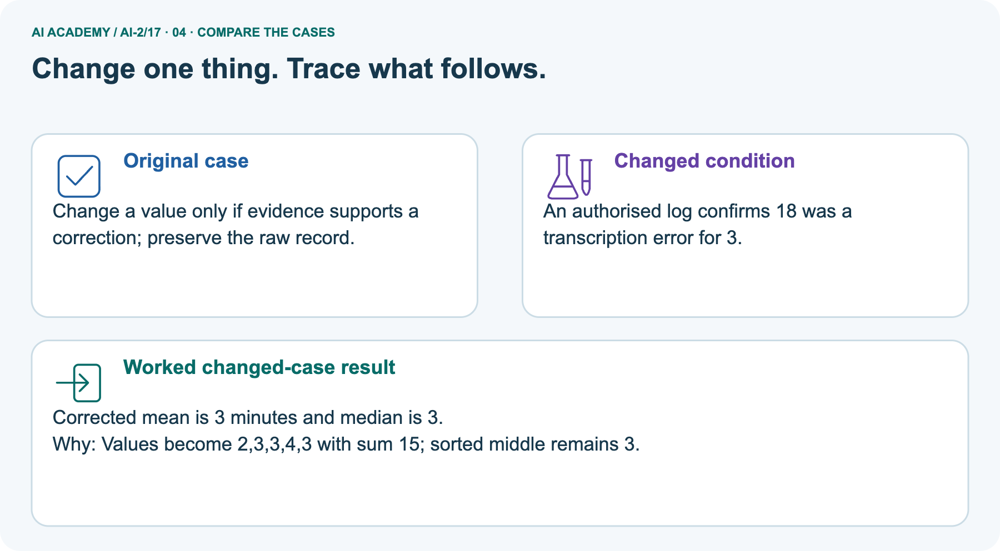
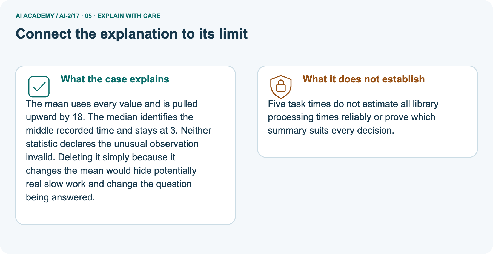
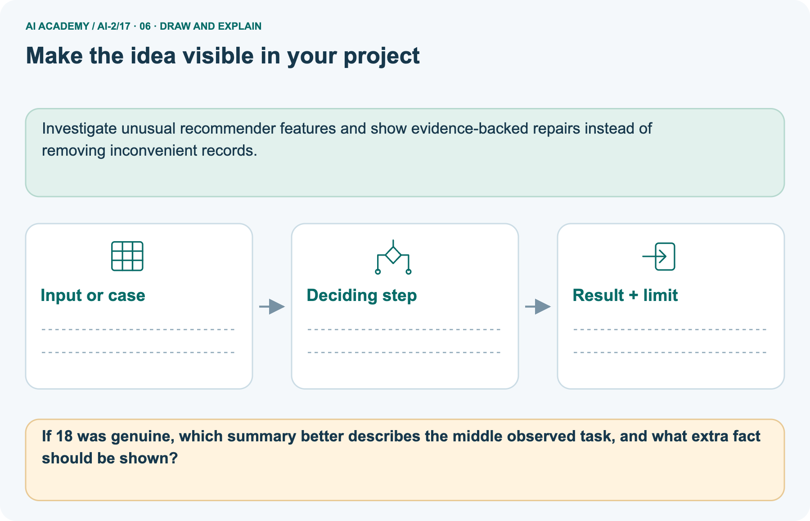

AI Academy · Level 2 · Grade 7 · Week 17 · Workbook
Noise and Outliers
Learn to understand, design, build, test and explain AI systems responsibly.
Project: Transparent Book Recommender
Workbook · 1 of 21
Recall and choose your starting point
Record your starting explanation for Noise and Outliers before opening notes. Show any later correction separately.
Try the recall before opening notes. Then use a different colour or a labelled second line to correct your explanation.
Overfitting Intuition
Without opening the old lesson, explain one key idea from Overfitting Intuition. Give an example and a mistake that the idea helps you avoid.
Decision Trees
Without opening the old lesson, explain one key idea from Decision Trees. Give an example and a mistake that the idea helps you avoid.
Training and Testing
Without opening the old lesson, explain one key idea from Training and Testing. Give an example and a mistake that the idea helps you avoid.
Workbook · 2 of 21
Practise with fading help
Complete the supported Noise and Outliers trace and record the first step you can explain without help.
Use W2: Compute two medians for Mean median and unusual values. Record the answer once; the lesson and workbook refer to the same attempt.
| Given inputs | Procedure I chose | Middle steps | Result and check |
|---|---|---|---|
Workbook · 3 of 21
Individual reasoning check
Check the proposed Noise and Outliers explanation against the supplied facts before discussing it.
Use the worked case for Mean median and unusual values. Proposed explanation: “A successful run proves the conclusion”. Decide whether this explanation is supported.
Point to the step or supplied fact that decides; explain your repair if needed.
Workbook · 4 of 21
Independent transfer case
Write one first attempt at the reserved independent case before feedback. Repeated copies of that case refer to the same recorded attempt.
Independent case: Compare summaries independently
For 1, 2, 2, 3 and 12, calculate mean and median. Then replace 12 with 2 and recalculate. Explain the change.
Attempt this case before feedback. Record any help. Earlier examples below are further practice; a case already practised with feedback cannot establish fresh transfer.
Workbook · 5 of 21
Your learning target
Connect the Noise and Outliers target to a trace and a justified conclusion.
Page counts are 72,80,96,960. The last book may be an anthology. Should a cleaning script delete it automatically? Give a defensible investigation and document the outcome.
Workbook · 6 of 21
Solve the given case
Solve the supplied Noise and Outliers case and show the deciding evidence.
Recorded lengths are 90,95,100,105,900 pages.
Is 900 automatically wrong?
Show your trace, calculation or evidence
Workbook · 7 of 21
Check a changed case
Apply the procedure to the changed case and record why the conclusion follows.
Page counts are 40, 42, 43 and 900. Should 900 be deleted immediately? Give two explanations to investigate.
My independent answer and reason
Week 17 Test and reflect
Workbook · 8 of 21
Design a revealing test
Specify a changed input, expected result and observation separately.
Create a changed input, boundary case or missing-information case. Write the expected answer or safe response before testing.
| Test record | My evidence |
|---|---|
| Changed input or condition | |
| Expected answer or fallback | |
| Observed result | |
| Why the result occurred |
Workbook · 9 of 21
Project checkpoint
Justify what Noise and Outliers adds to Transparent Book Recommender and keep the evidence.
Keep legitimate unusual books so the recommender can serve unusual readers.
The project change and evidence I will keep
Workbook · 10 of 21
Self check
Judge explanation, evidence, transfer and limits separately; attach the work behind your judgement.
- I can explain the mechanism.
- I can show evidence.
- I can handle a changed case.
- I can name a limit.
Mark each as not yet, with help or independently, and attach supporting work.
Teacher review ____________________ Next step ____________________
Workbook · 11 of 21
Transfer practice from the original programme
Use this earlier case as transfer practice. A case already discussed with feedback is not fresh assessment evidence.
Page counts are 72,80,96,960. The last book may be an anthology. Should a cleaning script delete it automatically? Give a defensible investigation and document the outcome.
Record support used: none, hint or teacher explanation.
Workbook · 12 of 21
W1 Compute a mean
Compute a mean. Apply the supplied Noise and Outliers facts and keep your reasoning.
Find the mean of 4, 4, 6, 6 and 10.
Workbook · 13 of 21
W2 Compute two medians
Compute two medians. Apply the supplied Noise and Outliers facts and keep your reasoning.
Find medians of [9, 1, 3] and [8, 2, 4, 6].
Workbook · 14 of 21
W3 Repair an explanation
Repair an explanation. Apply the supplied Noise and Outliers facts and keep your reasoning.
A learner deletes 18 because it is above the mean. What evidence is needed before correcting or excluding it?
Workbook · 15 of 21
W4 Compare summaries independently
Attempt before feedback. If this repeats the selected independent case, reuse that first attempt; otherwise keep a separate record. Compare summaries independently. Apply the supplied Noise and Outliers facts and keep your reasoning.
For 1, 2, 2, 3 and 12, calculate mean and median. Then replace 12 with 2 and recalculate. Explain the change.
Workbook · 16 of 21
W5 Report missing evidence
Report missing evidence. Apply the supplied Noise and Outliers facts and keep your reasoning.
A dataset is empty. Is reporting a mean of 0 justified?
Workbook · 17 of 21
Feedback, return check and learning record
Record the first repaired step and a different case to revisit after a delay.
| Evidence | My record |
|---|---|
| Worked alone / hint / model | |
| First step I repaired and why | |
| New case checked later; date and result | |
| What I can now explain without notes | |
| One remaining question |
Revisit this idea with your teacher after a delay. Familiarity is different from explaining and using it on a changed case.
Workbook · 18 of 21
Pictorial case practice: Noise and Outliers
A fictional library records five book-processing times in minutes. Explain the labelled step before checking the changed condition.
A fictional library records five book-processing times in minutes.
Sorted times: 2,3,3,4,18.
All are recorded measurements; no evidence yet shows 18 is a mistake.


If 18 was genuine, which summary better describes the middle observed task, and what extra fact should be shown?
Record the help used
Support used: alone / hint / worked example. This record is practice evidence.
Project connection: Investigate unusual recommender features and show evidence-backed repairs instead of removing inconvenient records.
Workbook · 19 of 21
Project portfolio milestone
Keep this week’s input, deciding step, result and limit together in the Transparent Book Recommender record.
Project: Transparent Book Recommender
Current milestone: Test changed cases. Keep normal, boundary and failure cases; compare expected and observed results.
Investigate unusual recommender features and show evidence-backed repairs instead of removing inconvenient records.
| Evidence to keep | My record |
|---|---|
| This week’s input and deciding step | |
| Prediction and actual result (or labelled paper trace) | |
| One change since the previous checkpoint and why | |
| One error or limit and the next test |
Workbook · 20 of 21
Supported practice and learning evidence
Try the supported questions before comparing with hints and feedback. Record what you repaired and the evidence you retained.
Use this supported practice once, in the browser or on paper. Keep the reserved independent assessment for a separate first attempt before teacher feedback.
A fictional library records five book-processing times in minutes.
Practice 1: explain the deciding evidence
Which labelled step matches this detail? Change a value only if evidence supports a correction; preserve the raw record.
1. Median
2. Investigate 18
3. Document repair
4. Mean
Hint · try first
Hint if needed: Read the steps in the pictorial case. Match the supplied detail to the stage that performs or records it.
Feedback · compare after trying
After your attempt, compare with the supported explanation: Document repair Change a value only if evidence supports a correction; preserve the raw record. The mean uses every value and is pulled upward by 18.
The median identifies the middle recorded time and stays at 3. Neither statistic declares the unusual observation invalid.
Deleting it simply because it changes the mean would hide potentially real slow work and change the question being answered.
Practice 2: explain the deciding evidence
Changed case · predict first
Changed-case practice: An authorised log confirms 18 was a transcription error for 3. Which conclusion is supported by the supplied facts?
1. Corrected mean is 3 minutes and median is 3.
2. We can decide the result without examining the changed input or the procedure.
3. This one example guarantees correct results for every future input.
Hint · try first
Hint if needed: Use the changed condition and the deciding step in the pictorial trace. The answer must say what follows from those facts.
Feedback · compare after trying
After your attempt, compare with the supported explanation: Corrected mean is 3 minutes and median is 3. Values become 2,3,3,4,3 with sum 15; sorted middle remains 3.
Repair a missing building block
Review Overfitting Intuition (ai-2/16). Goal: Compare training and validation evidence for model capacity. Short practice: Does zero training error justify choosing Complex in the original record?.
Return to this week and explain what you changed.
Review Decision Trees (ai-2/14). Goal: Fit a root question and leaf predictions from training examples. Short practice: Why does changing colour alone not change this tree’s prediction?.
Return to this week and explain what you changed.
Review Training and Testing (ai-2/11). Goal: Choose a split unit that matches the intended prediction claim. Short practice: How many distinct books are in each repaired role, and why report that as well as scan counts?.
Return to this week and explain what you changed.
Predict, run and debug
The browser lab lets you edit the supported Python examples already included in this lesson. Predict first, run, inspect the actual output or error, change one input, then run again.
Keep code, predictions, actual results and a reasoned revision together. On paper, label your result as a trace rather than an execution.
Keep your completed work
Use Download completed work in the hosted lesson to export your answers, reflections, practice feedback and code-run evidence. Open the HTML copy to read or print it.
Drafts stay in this browser when storage is available; clear drafts on a shared device.
Workbook · 21 of 21
Visual concept journey
Explain each Noise and Outliers picture from its labels, then record a relevant limit.
01. Noise and Outliers: the case

A fictional library records five book-processing times in minutes. Supplied facts: Sorted times: 2,3,3,4,18. All are recorded measurements; no evidence yet shows 18 is a mistake.
Point to the given fact that matters most. Explain why it matters.
02. Follow the deciding steps

Mean: Sum 30; divide by 5: mean 6 minutes. → Median: The middle of five sorted values is 3 minutes. → Investigate 18: Check the source record and whether an unusually slow task occurred. → Document repair: Change a value only if evidence supports a correction; preserve the raw record.
Point to each numbered stage and explain which recorded input it uses.
03. Retain unusual recorded measurements

Retain unusual recorded measurements. Units: minutes. Task 1: 2. Task 2: 3. Task 3: 3. Task 4: 4. Task 5: 18.
Read the labels and values. Explain the relationship the model shows.
04. Change one thing. Trace what follows.

Original case: Change a value only if evidence supports a correction; preserve the raw record. Changed condition: An authorised log confirms 18 was a transcription error for 3.
Expected result: Corrected mean is 3 minutes and median is 3. Reason: Values become 2,3,3,4,3 with sum 15; sorted middle remains 3.
Predict before checking the worked changed-case result. Name what changed and what the supplied facts allow you to conclude.
05. Connect the explanation to its limit

The mean uses every value and is pulled upward by 18. The median identifies the middle recorded time and stays at 3. Neither statistic declares the unusual observation invalid.
Deleting it simply because it changes the mean would hide potentially real slow work and change the question being answered.
Limit: Five task times do not estimate all library processing times reliably or prove which summary suits every decision.
Explain the case, then point to a limit on the claim.
06. Make the idea visible in your project

Investigate unusual recommender features and show evidence-backed repairs instead of removing inconvenient records. Draw your input, deciding step, result and limit.
Supported question: If 18 was genuine, which summary better describes the middle observed task, and what extra fact should be shown?
Draw your project trace and justify the deciding step using evidence.